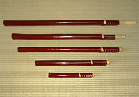
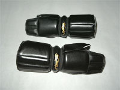

На данной страничке мы представляем экипировку традиционно используемую в Синкагэ-рю и некоторых других школах кэн-дзюцу. Данные предметы экипировки могут использоваться и другими школами, где обучают работе с оружием и против него.
Вы можете заказать у нас необходимый для тренировок инвентарь. Часть представленного ассортимента сейчас находится в Москве, остальное же будет заказано в Японии. Все предметы изготовляются вручную, поэтому на выполнение индивидуальных заказов и доставку потребуется определенное время.
|
|  |
Фукуро-синай это расщеплённая бамбуковая палка в специально изготовленном кожаном чехле, заменяющая меч на тренировках по фехтованию. Синаи могут быть изготовлены различной длинны (от 32 см. до 1 метра) в трех вариантах покраски кожи: "не крашенные" - заводская покраска кожи"касю" - кожа окрашивается краской "касю", обычно имеет красновато-бордовй цвет и "лакированный" отблеск"уруси" - традиционный древний способ покракси краской "уруси", обычно красный с различными оттенками или черный цвета |
|
|  |
Котэ - защита для кисти, запястья и предплечья, изготовленная вручную из натуральной кожи, по образцу традиционных японских доспехов. Мы можем предложить вам котэ разных видов и раскрасок, в том числе и с орнаментом. |
|